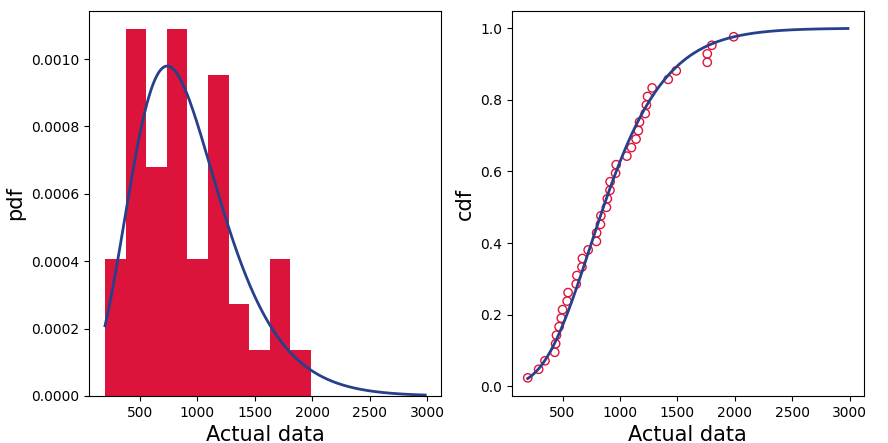
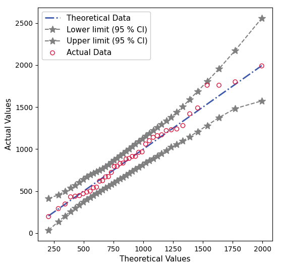

EVA Class#
statista.eva
#
Extreme value analysis.
Annual Maximum Series (AMS) Analysis is a statistical method commonly used in fields like hydrology, meteorology, and environmental engineering to analyze extreme events, such as floods, rainfall, or temperatures. The primary goal of AMS analysis is to assess the frequency and magnitude of extreme events over time.
Key Concepts of AMS Analysis
Definition
The Annual Maximum Series is a time series composed of the maximum values observed within each year. For example, in hydrology, the AMS might consist of the highest daily flow recorded in each year for a river.
Purpose
The AMS is used to model and predict the probability of extreme events occurring in the future. This is crucial for risk assessment and the design of infrastructure to withstand such events (e.g., dams, levees, drainage systems).
Advantages of AMS Analysis - Simplicity: AMS analysis is straightforward and focuses on extreme events, which are often of primary interest. - Historical Context: Provides insights based on historical extreme values, which are directly relevant for planning and design.
Limitations of AMS Analysis - Data Limitations: The accuracy of AMS analysis depends on the availability and quality of long-term data. - Ignores Sub-Annual Events: AMS considers only one value per year, potentially ignoring significant events that occur more than once in a year.
Common Applications
- Flood Frequency Analysis: AMS is often used to estimate the probability of extreme flood events to help design flood control infrastructure.
- Rainfall Analysis: Used to assess the risk of extreme rainfall events for urban drainage design.
- Temperature Extremes: AMS can be used to evaluate the risk of extremely high or low temperatures.
ams_analysis(time_series_df, ams=False, ams_start='A-OCT', save_plots=False, save_to=None, filter_out=None, distribution='GEV', method='lmoments', obj_func=None, quartile=0, alpha=0.1)
#
Annual Maximum Series analysis.
ams analysis method reads resamples all the time series in the given dataframe to annual maximum, then fits the time series to a given distribution and parameter estimation method.
Parameters:
| Name | Type | Description | Default |
|---|---|---|---|
time_series_df
|
DataFrame
|
DataFrame containing multiple time series to do the statistical analysis on. |
required |
ams
|
bool
|
True if the given time series is annual mean series. Default is False. |
False
|
ams_start
|
str
|
The beginning of the year which is used to resample the time series to get the annual maximum series. Default is "A-OCT". |
'A-OCT'
|
save_plots
|
bool
|
True if you want to save the plots. |
False
|
save_to
|
str
|
The rdir where you want to save the statistical properties. |
None
|
filter_out
|
bool
|
For observed or hydraulic model data it has gaps of times where the model did not run or gaps in the observed data if these gap days are filled with a specific value and you want to ignore it here give filter_out = Value you want |
None
|
distribution
|
str
|
distribution name. Default is "GEV". |
'GEV'
|
method
|
str
|
available methods are 'mle', 'mm', 'lmoments', 'optimization'. Default is "lmoments". |
'lmoments'
|
obj_func
|
callable
|
objective function to be used in the optimization method, default is None. for Gumbel distribution there is the
|
None
|
quartile
|
float
|
the quartile is only used when estimating the distribution parameters based on optimization and a threshould value, the threshold value will be calculated as the quartile coresponding to the value of this parameter. |
0
|
alpha
|
float
|
alpha or Significance level is a value of the confidence interval. Default is [0.1]. |
0.1
|
Returns:
| Name | Type | Description |
|---|---|---|
DataFrame |
DataFrame
|
Statistical properties like mean, std, min, 5%, 25%, median, 75%, 95%, max, start_year, end_year, nyr, q1.5, q2, q5, q10, q25, q50, q100, q200, q500, q1000. |
DataFrame |
DataFrame
|
Distribution properties like the shape, location, and scale parameters of the fitted distribution, plus the D-static and P-Value of the KS test. |
Examples:
- First read the data as
pandas.DataFrame.>>> import pandas as pd >>> ams_gauges = pd.read_csv(f"examples/data/ams-gauges.csv", index_col=0) >>> print(ams_gauges) # doctest: +SKIP Frankfurt Mainz Kaub Andernach Cologne Rees date 1951 -9 4250 4480 6080 6490 6830 1952 -9 4490 4610 6970 7110 7340 1953 -9 4270 4380 7300 7610 7970 1954 -9 2850 2910 3440 3620 3840 1955 -9 5940 6050 9460 9460 9500 1956 -9 5000 5150 7140 7270 7540 1957 -9 4500 4520 6650 6750 6950 ..... 1998 1060 4720 4790 6910 6700 6150 1999 1420 5480 5730 8160 8530 9240 2000 625 3750 3900 6390 6370 6550 2001 1140 5420 5710 8320 8410 8410 2002 1170 4950 5140 7260 7240 7940 2003 1800 5090 5350 8620 8840 9470 2004 197 1150 1190 1470 1580 1810 - The time series data we have just read are the annual maximum series of the gauges, the first column is an index of the year (54 years in total) and the rest are dischate values in m3/s for each the station. a value 0f "-9" is used to fill the missing data.
- The
ams_analysisfunction takes the time seriesDataFrameas the first and only positional argument, all the other arguments are optional. Since the time series is annual maximum series already, so we don't need the function to do any resampling, we setams=True. Theams_startcould be used to provide the beginning of the year to resample the time series to ams (i.e.,ams_start = "A-OCT"). - We want to save the plots, so we set
save_plots=Trueand provide the directory where we want to save the plots insave_to. - We also want to filter out the missing data, so we set
filter_out=-9. - In order to fit the time series to a distribution we also to provide the parameter estimation method (i.e.,
lmoments,mle,mm,optimization), the default is thelmoments, and you need to provide the name of the distribution you want to fit the time series to (i.e.,GEV,Gumbel). So for that we will usemethod="lmoments", anddistribution="GEV". - The
alphais the significance level of the confidence interval, the default is 0.1. Thealphaparameter is necessary for the confidence interval calculation.>>> method = "lmoments" >>> save_to = "examples/data/gauges" >>> statistical_properties, distribution_properties = ams_analysis( ... time_series_df=ams_gauges, ... ams=True, ... save_plots=True, ... save_to=save_to, ... filter_out=-9, ... method=method, ... alpha=0.05, ... ) # doctest: +SKIP -----KS Test-------- Statistic = 0.07317073170731707 Accept Hypothesis P value = 0.9999427584427157 -----KS Test-------- Statistic = 0.07317073170731707 Accept Hypothesis P value = 0.9999427584427157 2024-08-18 12:45:04.779 | DEBUG | statista.confidence_interval:boot_strap:104 - Some values used top 10 low/high samples; results may be unstable. 2024-08-18 12:45:05.221 | INFO | statista.eva:ams_analysis:300 - Gauge Frankfurt done. - The
ams_analysisfunction will iterate over all the gauges in the time series and fit the time series to the distribution and calculate the statistical properties and the distribution properties of the fitted distribution. - One of the outputs of the function is the statistical properties of the time series, which includes the mean, std,
min, and some quantile (5%, 25%, ..., 95%, max).
>>> print(statistical_properties.loc[:, statistical_properties.columns[:9]]) # doctest: +SKIP mean std min 5% 25% median 75% 95% max id Frankfurt 917.439024 433.982918 197.0 347.00 548.00 882.0 1170.00 1760.00 1990.0 Mainz 4153.333333 1181.707804 1150.0 2286.50 3415.00 4190.0 4987.50 5914.00 6920.0 Kaub 4327.092593 1243.019565 1190.0 2394.50 3635.00 4350.0 5147.50 6383.50 7160.0 Andernach 6333.407407 2016.211257 1470.0 3178.00 5175.00 6425.0 7412.50 9717.00 10400.0 Cologne 6489.277778 2037.005658 1580.0 3354.50 5277.50 6585.0 7560.00 9728.85 10700.0 Rees 6701.425926 2074.994365 1810.0 3556.50 5450.00 6575.0 7901.75 10005.00 11300.0 - The rest of the columns in the
statistical_propertiesare start_year, end_year, nyr, q1.5, q2, q5, q10, q25, q50, q100, q200, q500, q1000, which are the return periods of the fitted distribution.>>> print(statistical_properties.loc[:, statistical_properties.columns[9:]]) # doctest: +SKIP start_year end_year nyr q1.5 q2 ... q200 q500 q1000 id Frankfurt 1964.0 2004.0 40.0 683.254634 855.296864 ... 2258.332886 2460.823383 2717.037039 Mainz 1951.0 2004.0 53.0 3627.907224 4164.824744 ... 6734.883442 6919.948680 7110.767115 Kaub 1951.0 2004.0 53.0 3761.253314 4321.114689 ... 7131.430892 7348.738113 7577.263513 Andernach 1951.0 2004.0 53.0 5450.050443 6369.734950 ... 10654.874462 10950.940916 11252.770123 Cologne 1951.0 2004.0 53.0 5583.579049 6507.694660 ... 10940.851299 11261.139356 11591.687060 Rees 1951.0 2004.0 53.0 5759.172691 6693.471602 ... 11368.384249 11728.167908 12106.027638 - The other output is the distribution properties of the fitted distribution, which includes the shape, location, and
scale parameters of the fitted distribution, plus the D-static and P-Value of the KS test.
>>> print(distribution_properties) # doctest: +SKIP c loc scale D-static P-Value id Frankfurt 0.051852 718.720761 376.188608 0.073171 0.999943 Mainz 0.307295 3743.806013 1214.617042 0.055556 0.999998 Kaub 0.282580 3881.573477 1262.426086 0.055556 0.999998 Andernach 0.321513 5649.076008 2084.383132 0.074074 0.998738 Cologne 0.306146 5783.017454 2090.224037 0.074074 0.998738 Rees 0.284227 5960.022503 2107.197210 0.074074 0.998738 -
Since we have set
save_plots=True, the function will save the plots in the directory we have provided insave_to. For example, the plot of Frankfurt's time series data is saved as "Frankfurt.png" for thepdfandcdfand "f-Frankfurt.png" for the confidince interval plot in the specified directory.'

Source code in statista/eva.py
46 47 48 49 50 51 52 53 54 55 56 57 58 59 60 61 62 63 64 65 66 67 68 69 70 71 72 73 74 75 76 77 78 79 80 81 82 83 84 85 86 87 88 89 90 91 92 93 94 95 96 97 98 99 100 101 102 103 104 105 106 107 108 109 110 111 112 113 114 115 116 117 118 119 120 121 122 123 124 125 126 127 128 129 130 131 132 133 134 135 136 137 138 139 140 141 142 143 144 145 146 147 148 149 150 151 152 153 154 155 156 157 158 159 160 161 162 163 164 165 166 167 168 169 170 171 172 173 174 175 176 177 178 179 180 181 182 183 184 185 186 187 188 189 190 191 192 193 194 195 196 197 198 199 200 201 202 203 204 205 206 207 208 209 210 211 212 213 214 215 216 217 218 219 220 221 222 223 224 225 226 227 228 229 230 231 232 233 234 235 236 237 238 239 240 241 242 243 244 245 246 247 248 249 250 251 252 253 254 255 256 257 258 259 260 261 262 263 264 265 266 267 268 269 270 271 272 273 274 275 276 277 278 279 280 281 282 283 284 285 286 287 288 289 290 291 292 293 294 295 296 297 298 299 300 301 302 303 304 305 306 307 308 309 310 311 312 313 314 315 316 317 318 319 320 321 322 323 324 325 326 327 328 329 330 331 332 333 334 335 336 337 338 339 340 341 342 343 344 345 346 347 348 349 350 351 352 353 354 355 356 357 358 359 360 361 362 363 364 365 366 367 368 369 370 371 372 373 | |